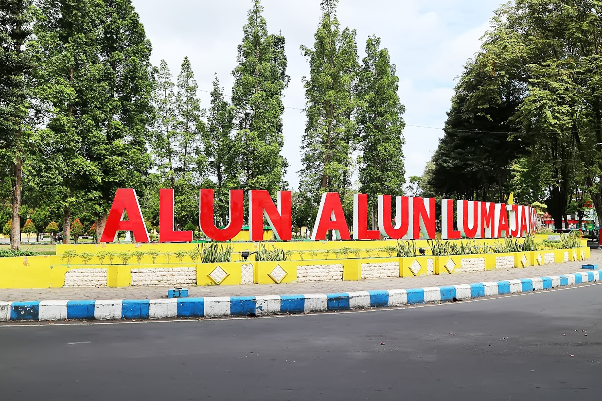
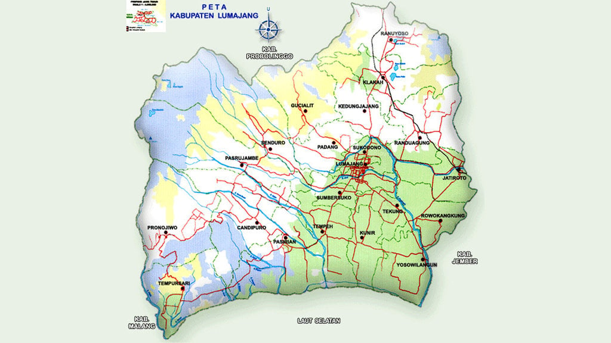

SEJARAH

Lumajang, sebuah kabupaten yang kaya akan sejarah, memiliki akar yang dalam dalam budaya dan kepercayaan Hindu.
Nama Lumajang berasal dari Lamajang, ditemukan dalam artefak kuno dan prasasti seperti Prasasti Mula Malurung,
Naskah Negara Kertagama, dan Kitab Pararaton. Dalam masa pemerintahan Kerajaan Kediri, Lumajang menjadi pusat kegiatan keagamaan Hindu,
terutama sehubungan dengan Gunung Semeru yang diyakini sebagai tempat persembayangan dewa. Keberadaan Pura Mandhara Giri Semeru Agung
menjadikannya pusat agama Hindu tertua di Asia Tenggara.
Pada masa Kerajaan Singasari, Lumajang tetap menonjol, dan Raja Singasari, Nararya Sminingrat, menetapkan sejarah baru dengan menobatkan
putranya sebagai penguasa Lumajang. Namun, setelah keruntuhan Kerajaan Singasari pada tahun 1292 M, Lumajang tetap menjadi daerah yang dicari.
Raden Wijaya, menantu Raja Kertanegara, melibatkan Arya Wiraraja dalam rencananya untuk merebut tahta dari Jayakatwang. Melalui siasatnya,
Raden Wijaya mendirikan Kerajaan Majapahit setelah mengalahkan Kerajaan Kediri dan memberikan sebagian wilayahnya kepada Arya Wiraraja, yang
kemudian memimpin Kerajaan Lamajang Tigang Juru.
Dengan berjalannya waktu, pengaruh Islam mulai terasa di tanah Jawa, membawa perubahan dalam keadaan Lumajang.
Meskipun demikian, Lumajang terus berkembang dengan potensi yang dimilikinya, termasuk sektor pertanian, perkebunan, peternakan, perindustrian,
perdagangan, dan pariwisata. Sejarahnya yang kaya dan perkembangannya yang terus-menerus menjadikan Lumajang sebagai bagian yang signifikan dari
warisan budaya dan sejarah di Indonesia.
GEOGRAFIS

Kabupaten Lumajang merupakan salah satu daerah yang berada di wilayah bagian selatan Propinsi Jawa Timur. Kabupaten Lumajang terdiri dari
21 Kecamatan dengan batas-batas wilayah yaitu sebelah utara Kabupaten Probolinggo, sebelah timur Kabupaten Jember, sebelah selatan Samudera Indonesia,
dan sebelah barat Kabupaten Malang. Sebagaimana pada umumnya Kabupaten yang berada di daerah selatan, maka Kabupaten Lumajang memiliki
potensi yang cukup besar pada sektor pertanian dan pertambangan meskipun belum sepenuhnya dapat dieksploitasi secara optimal.
Meskipun peningkatan paling besar berikutnya adalah pada sektor sekunder dan tersier, namun hal itu menunjukkan bahwa sektor tersebut mengalami
imbas kenaikan karena disebabkan sektor primer yang semakin berkembang.
Wilayah Kabupaten ini adalah 1.790,90 km2 , di mana dibagi menjadi 21 kecamatan , 198 desa. Dan 7 kelurahan.
Di sebelah barat Lumajang berbatasan dengan Kabupaten Malang dan di sebelah utara berbatasan dengan Kabupaten Probolinggo.
Sementara di sisi timur , berbatasan dengan Kabupaten Jember dan di sebelah selatan dengan Samudara Hindia.
Secara geografis Lumajang berada pada posisi 112° -53' - 113° -23' Bujur Timur dan 7° -54' -8° -23' Lintang Selatan.
Lumajang beriklim tropis, yang berdasarkan klasifikasi Schmid dan Ferguson, termaksud iklim tipe C dan sebagian kecamatan lainnya beriklim D.
Jumlah curah hujan tahunan berkisar antara 1.500-2.500 ml. Temperatur sebagian besar wilayah 24°C – 23°C. Di kawasan lereng
Gunung Semeru dan kawasan lain yang berada diatas 1.000 meter di atas permukaan laut (dpl), temperature terenda mencapai 5°C. Batas-batas Kabupaten Lumajang adalah
sebelah Barat Kabupaten Malang. Sebelah Utara Kabupaten Probolinggo. Sebelah Timur kabupaten Jember. Sebelah Selatan Samudra Indonesia.
Kabupaten Lumajang memiliki potensi diantaranya sektor pertanian dengan komoditas andalan padi (Kabupaten Lumajang merupakan salah satu lumbung pangan/padi di Prop.
Jawa Timur), produk buah-buahan segar seperti pisang agung dan pisang mas kirana. Pada sektor peternakan ada kambing PE dan susu segar, pada sektor perindustrian
dan perdagangan ada kerajinan perak, dan pada sektor kehutanan ada produk kayu olahan yang masih menjadi andalan di sektor ini. Sedangkan untuk perikanan
juga potensial untuk perikanan tangkap dan perikanan budidaya. Sektor lain yang juga sangat potensial adalah sektor pariwisata.
WISATA
Air Terjun Tumpak Sewu

Air Terjun Tumpak Sewu menawarkan keindahan alam yang spektakuler. Air terjun setinggi sekitar 120
meter ini memiliki air yang jernih dan segar, serta dikelilingi oleh vegetasi tropis yang hijau dan lebat.
Meskipun terletak di daerah yang cukup terpencil, akses ke Air Terjun Tumpak Sewu cukup mudah. Setelah mencapai
desa Sidomulyo, pengunjung hanya perlu berjalan kaki sekitar 20-30 menit untuk mencapai air terjun.
Danau Ranu Kumbolo

Ranu Kumbolo adalah sebuah danau yang terletak di Pegunungan Tengger, kaki Gunung Semeru, Kecamatan Senduro,
Kabupaten Lumajang, Provinsi Jawa Timur. Danau ini merupakan bagian dari Taman Nasional Bromo Tengger Semeru
dan berada di ketinggian 2.400 meter di atas permukaan laut (mdpl). Bagi para pecinta alam, serta para backpacker,
Ranu Kumbolo bukanlah tempat yang asing. Hal tersebut lantaran danau ini juga berfungsi sebagai tempat transit,
baik bagi para pendaki yang ingin menuju Mahameru, Puncak Semeru maupun bagi para pendaki yang turun dari Mahameru.
Danau ini sangat cocok sebagai tempat melepas penat sambil melihat indahnya pemandangan matahari terbit maupun
matahari terbenam dari sudut danau.